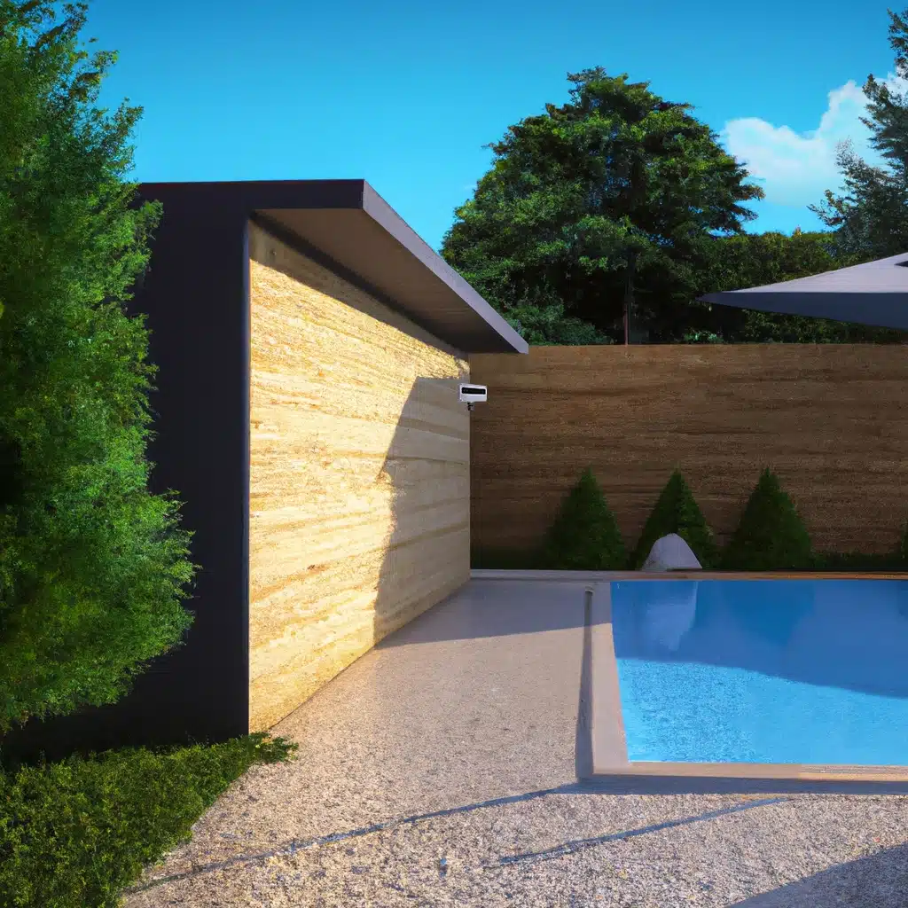
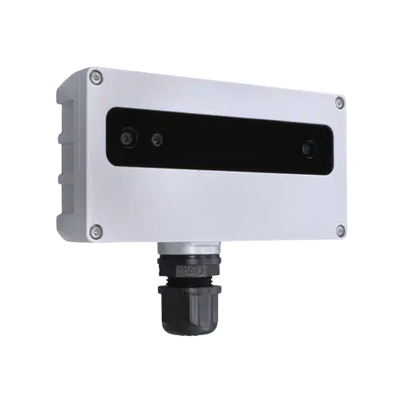

Alarme de piscine périmétrique
intelligente et innovante
Notre alarme de piscine périmétrique est intelligente et prévient si votre enfant s'approche seul de la piscine.
Facile à installer, discrète et autonome, notre caméra intelligente Guardia analyse la situation et évite les fausses alertes (vent, objets…).

L'alarme en situation
Concrètement, comment fonctionne notre alarme intelligente ?
Une caméra autonome, une IA embarquée, aucune donnée qui sort de chez vous.
Alarme périmétrique
La caméra surveille une large zone autour de la piscine et détecte si votre enfant s'en approche sans être accompagné d'un adulte.
Anticipation précieuse
Une puissante alarme prévient avant qu'un accident ne survienne et vous permet un gain de temps décisif pour intervenir.
Détection intelligente
Notre intelligence artificielle embarquée reconnaît enfants, adultes et animaux. L'alarme évite les fausses alertes (vent, ballons, bouées…).
Respecte votre vie privée
Aucune donnée ne sort de chez vous. Le respect de votre vie privée est primordial.
Fonctionnement autonome
Développée avec nos utilisateurs, l'alarme est intelligente et autonome. Plus besoin de la désactiver avant la baignade.
Facile à installer
La caméra est très facile à installer (mur, arbre, poteau) et ne nécessite pas de travaux autour de votre piscine.
La caméra intelligente Guardia
Contient : caméra intelligente Guardia équipée d'une alarme sonore, cordon de raccordement électrique, manuel d'utilisation.

Nos partenaires
L'importance de bien sécuriser sa piscine
La sécurité, une obligation légale
Depuis 2004, les propriétaires de piscine enterrée ont l'obligation légale d'installer un dispositif de sécurité. Notre solution vient compléter les moyens de protection, comme les bâches et les couvertures, qui sont efficaces pendant la nuit mais restent ouvertes pendant la journée.
Être en conformité avec la législation ne suffit pas
Selon les enquêtes de Santé Publique France, plusieurs centaines de noyades sont à déplorer chaque année. Le nombre de victimes chez les moins de 6 ans a doublé entre 2015 et 2018. Pourtant, dans 68 % des cas de noyades, un système de sécurité était présent mais n'a pas rempli sa fonction.
Les systèmes actuels ne sont pas adaptés aux usages
Barrières, volets et couvertures de protection sont souvent laissés ouverts pendant la journée. Les alarmes d'immersion ne parviennent pas toujours à détecter la chute des enfants, ou sont désactivées en raison de leur fonctionnement intempestif. Un système de sécurité efficace doit se fondre dans les habitudes et s'intégrer au mode de vie de ses utilisateurs.
Le risque des périodes « floues »
Les accidents surviennent le plus fréquemment dans les périodes dites « floues », lorsque les adultes s'éloignent du bassin (repas, jardinage…) et que les enfants ne sont plus sous leur surveillance étroite. Les enfants échappent à l'attention des adultes quelques minutes, malheureusement suffisantes pour qu'un drame ne survienne.
Installer un système complémentaire réduit considérablement les risques
L'installation de notre alarme de piscine périmétrique offre une seconde ligne de protection et réduit considérablement les risques de noyade. Notre système a été conçu en collaboration avec des familles pour s'adapter parfaitement à vos habitudes et assurer une protection qui prend en compte la réalité du quotidien.
Chiffres clés
Les enfants de moins de 6 ans représentent 75 % des victimes de noyade en piscines privées.
Le nombre de noyades chez les moins de 6 ans a doublé entre 2015 et 2018.
Un enfant peut se noyer en moins de 2 minutes dans 20 cm d'eau.